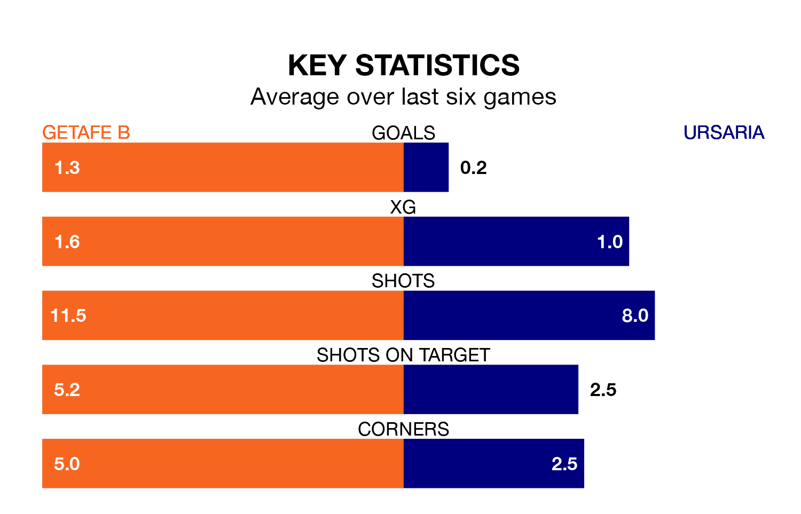

Ursaria come to play Getafe B on early Sunday in poor form, having collected just four points from their last six games.
The visitors have won one and drawn one of their last six fixtures, while Getafe B have four wins and a draw.
With 18 goals in 17 games so far this season, Getafe B are scoring at the league's average rate with 1.1 goals per game. And they are conceding fewer than average, letting in 17 goals at a rate of 1.0 per game.
Ursaria are also average scorers, with 1.1 goals per game. They have also conceded 1.1 goals per game.
The home team are seventh in the table after 17 games, of which they have won seven and drawn five, earning 26 points.
The visitors are two places behind Getafe B in ninth, with six wins and six draws putting them on 24 points.
Over the last year, Getafe B and Ursaria have played each other twice. Getafe B won one of them and they drew the other.
Their last meeting was on September 3, when they played out a 0-0 draw.
Getafe B's last match was on January 7, a 2-0 win against UD San Fernando.
Ursaria lost 3-0 against CF Villanovense last time out, also on Sunday.
Updated: 13:38 (UTC), 10/01/24